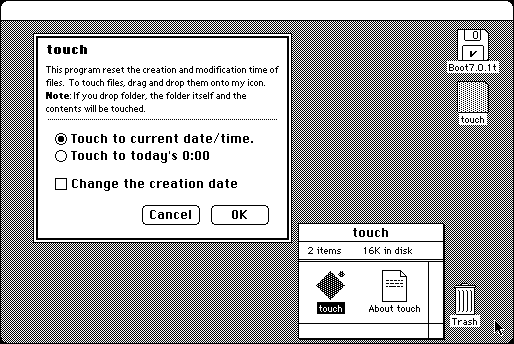

Download
touch_1.2.zip (12K) touch 1.2 repackaged into a zipped hfs disk image and checksum file. The disk image can be mounted with Mini vMac.
touch_1.2.hqx (12K) touch 1.2 in the original format.
copyright: Takahiro Sumiya
mod date: Aug 21, 1996
license: freeware
last known url
(gone)
“Reset the creation and modification date of files/folders.” Requires “System 7.0 or later”.

If you find these downloads useful, please consider helping the Gryphel Project, which hosts them.
Here are the md5 checksums for the downloads, signed with Gryphel Key 5:
--------- GRY SIGNED TEXT --------- 3e62dae814e6df3fdcfa376f8b22038f touch_1.2.zip d6613abd2bb8f5608e5891aea28d712d touch_1.2.hqx ------- BEGIN GRY SIGNATURE ------- Gry/4Xa8CFcUzxdN/NM7FnlgChOtmbbcWETFyQthbnB/+3nJmqGuDwi9Svv0bIf0 futSHRWXQNpGAGk6C5TfDJl6NVAdgIRF9k53rg/6uAeYuDMWC4LT05ScGawGdCT3 1EqueuCJtN4QEr6safrnKUxGB87eR6CTqvgc/C+ESGCmybA2NM2TfBgKcUQ75Q6Y -------- END GRY SIGNATURE --------